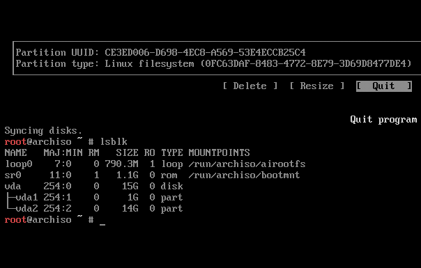
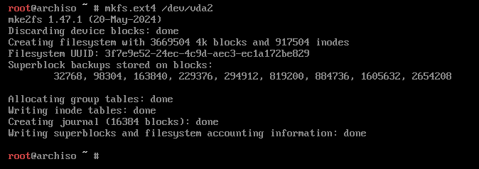

ENTRY 21.09.2024
An opinionated arch installation guide.
This article is compatible with lynx. You can read it from inside the arch install medium!
Installing Arch isn't hard, but it can be overwhelming if you're not familiar with all the technologies that compose a (productive/userspace) linux system. I recently built a new computer and had to refamiliarize myself with all the little things I did with my installation to make the system I'm familiar with, my goal with this page is to create a simple (but very opinionated and direct) installation guide that is useful to myself and anyone else coming across this page.This page is still very much W.I.P, I will probably add more stuff beyond the simple "base installation" eventually.
Some initial notes
Please don't use this guide as a definitive resource for an installation, every computer (and user) is different - you may have other needs. For example, I'm running soley AMD as my experience with NVIDIA/Intel on linux has been nothing short of hellish - and thus I won't be talking about how to work with those devices.Additionally, arch has a lot of defaults that work for me. For example, I use an American English keyboard, which requires no additional configuration for a keyboard layout.
All that being said, make sure you're also referencing the arch wiki installation guide. This guide should be more-so considered my personal reccomendation on how to go about each individual step.
Also, I consistently advise those with limited experience to try installing arch to a virtual machine first, before bare-metal. If you're able to do it once, in a safer enviorment, it helps a lot with your confidence and understand of what's actually going on.
^ Im saying all this to cover my ass when something goes wrong. Not my fault :D
Assumptions / Goals
By the end of this guide, you should have a baseline arch linux system installed with the following (opinionated) configuration;- Installing to a fresh machine (or seperate hard drive)
- GRUB (UEFI)
- Only two partitions / and /boot/
- swapfile
- basic helper stuff (networkmanager, bluez)
Getting started
Use balena etcher to flash the arch isoMake sure secure boot is off in your BIOS. Set your USB as the boot drive and get started :)
Wi-Fi is slow and often a pain to configure, if you can, use ethernet. Otherwise I reccomend using your phone as a USB tether (this is always how I install on a laptop). Both methods are plug-and-play.
Run a quick ping google.com to make sure everythings working okay.
Also verify your boot mode is UEFI by running cat /sys/firmware/efi/fw_platform_size. This should output 64. If this file doesn't exist, it means you're booted in BIOS! If you're in BIOS, you'll have to boot into your bios settings and switch to UEFI. If your motherboard is old as shit and doesn't support UEFI, ignore my partitioning and grub installation instructions and follow these instructions instead. (I FORGOT TO FOLLOW THIS STEP LOL)
Da' Disks
The arch-wiki will reccomend using fdisk. I hate fdisk.
I love CLI for most things, but using fdisk is like pulling teeth - it's significantly more intuitive to use a TUI. There's no need to
be elitist about partitioning a disk.
Instead, we will be using cfdisk, which is also already installed on the archiso - it is a TUI interface for partitioning that makes your life significantly easier.
First, run lsblk to find the name of the disk you want to install to. In my case this is vba (since im demoing this on a VM), but on bare-metal you'll typically either see sdX or nvmeXnY. For the duration of this guide im gonna abbreviate this as DX, just replace that with whatever diskname you have.
Now, we can run cfdisk to partition our disks...
Select the GPT label here, First make a 1GB partition, set to EFI System. This will be our /boot/ partition.
Then, make partition the rest of the disk to be linux filesystem
Finally, select write to apply these changes and select quit. You can run lsblk again to verify you know now have two partitions,  Now we need to format these partitions to their respective needed filesystems. The 1GB EFI partition needs to be FAT32, and can be formatted with the following command;
In my case, that looks like this; Next, we need to format our "root" linux filesystem partition to be ext4;mkfs.fat -F32 /dev/DXp1
In my case...  Now we have to mount the drives, you can do that with the following commands; (make sure you use the right partition numbers!)mkfs.ext4 /dev/DXp2
mount /dev/DX2 /mnt
mount --mkdir /dev/DX1 /mnt/bootInstalling the system
Once the disks are mounted, the main system packages can be installed using pacstrap. To get our system started, run it with /mnt as our target and with the following package names;If you're not familiar with the basics of vim, you can replace it with nano instead.pacstrap /mnt base linux linux-firmware vim
Now make yourself a nice cup of tea while it installs :)
 Once that's done, we need to generate the fstab file. This is just a fancy table that tells arch how to mount disks at boot.
Once that's done, we need to generate the fstab file. This is just a fancy table that tells arch how to mount disks at boot.
You can verify that it was properly generated by cat'ing the file. After this, we can 'get into' our installation by using arch-chroot;genfstab -U /mnt >> /mnt/etc/fstab
arch-chroot /mntMaking a "swapfile"
Typically, guides will reccomend that you make a swap partition. I beleive this is unnecessary and adds additional annoyances to the partitionng scheme. Instead, we can make a swap file that lives in the root directory and is loaded after the main filesystem.First, allocate some space for the swapfile - I usually do 2GB on bare metal, but I'm just gonna do 500Mb on this VM...
Then change the permissions of the file to 600...fallocate -l <amount> /swapfile
chmod 600 /swapfilemkswap /swapfileswapon /swapfileTogether, the process looks like this. (And once again, you can verify stuff with cat)echo "/swapfile none swap defaults 0 0" >> /etc/fstab
Set timezone
Setting the timezone is relatively straightforward, just run these commands;
ln -sf /usr/share/zoneinfo/Region/City /etc/localtime
hwclock --systohcSet Locales
Edit /etc/locale.gen and uncomment en_US.UTF-8 UTF-8 and other needed UTF-8 locales.Then, generate the locales by running locale-gen
Then make locale.conf to set your locale;
echo “LANG=en_US.UTF-8” > /etc/locale.conf
hostname and hosts-file
This is the most important stage of the installation, naming your computer!
A good naming scheme for your machines is always good, an old professor of mine named his
computers off elements of the periodic table. Personally, I name my machines off words from The Dictionary of Obscure Sorrows.
Let's name this demo VM "watashiato" Then edit your /etc/hosts file to look like this (use vim/nano)echo "<hostname>" > /etc/hostname
# Static table lookup for hostnames.
# See hosts(5) for details.
127.0.0.1 localhost
::1 localhost
127.0.1.1 <hostname>.localdomain <hostname>
Set root password
Pretty self-explanatory;passwd (type in password)Bare minimum packages to get you started
Install packages with pacman -S. I reccomend the following for the basis of a system;
pacman -S grub efibootmgr networkmanager network-manager-applet wireless_tools wpa_supplicant dialog os-prober base-devel linux-headers reflector git bluez bluez-utils xdg-utils xdg-user-dirs
Additionally, if you're lazy and just want to install a Desktop Enviorment at this point, add it's bundle name here as well. gnome for gnome, plasma for KDE, xfce4 xfce4-goodies for xfce4.
Personally, I'm insane and build my UI up from nothing with i3wm a bunch of other stuff, but no judgement for using a DE (unless it's gnome xd).
GRUB
Like most, I use GRUB for my bootloader, it can be set-up with the following commands;
grub-install --target=x86_64-efi --efi-directory=/boot --bootloader-id=GRUB
grub-mkconfig -o /boot/grub/grub.cfgSome final stuff before we reboot
Quickly enable a couple services so they're ready to go when we reboot;
systemctl enable NetworkManager
systemctl enable bluetooth
Create your local user, and add them to the wheel group...
useradd -mG wheel <username>
passwd <username> (type in password)
%wheel ALL=(ALL:ALL) ALL
REBOOT AND PRAY
First, type exit to exit out of chroot into your iso. Then type umount -a to unmount everything (ignore any 'busy' messages). Finally, type reboot to restart the system.If everything went well you should reboot into GRUB, and from here into a working arch installation :D
then login...
Then connect to the internet with nmtui (or with your DE if you installed one).
And finally, run pacman -S neofetch && neofetch. Take a picture and share for bragging rights - you installed arch linux!
IOU: Post-installation stuff, getting a cool i3wm desktop configured.